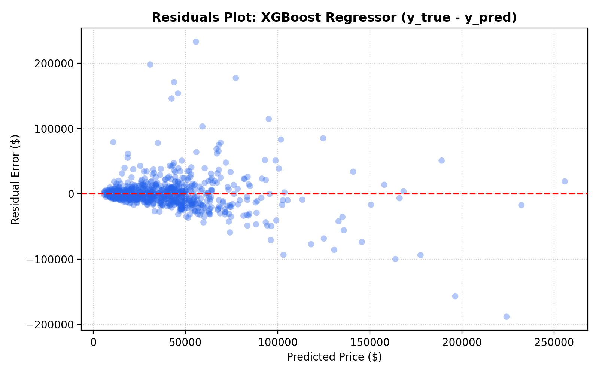

Used Car Price Prediction Using Machine Learning
An empirical benchmark of baseline, linear, and tree-ensemble models predicting secondary automotive listing prices.
1. The question and problem formulation
In secondary automotive resale markets, price determination is notoriously volatile. Unlike new vehicles sold at standardized MSRP, used car valuations are shaped by cumulative usage, chronological age, brand cachet, powertrain type, and accident history.
Target Variable
price: Continuous asking price in USD ($) from verified dealer/private secondary listings.
Unit of Observation
One distinct used passenger vehicle advertisement listed on Cars.com.
Research Question: To what extent can observable pre-purchase vehicle attributes predict secondary market asking prices, and do non-linear tree ensembles provide statistically significant error reductions over linear depreciation baselines?
2. The data and quality audit
The dataset originates from Cars.com via Kaggle (Taeef Najib, 2024), comprising 4,009 raw rows and 12 columns. A systematic audit revealed several real-world data quality challenges:
| Variable | Raw Format | Issue Identified | Handling & Coding Decision |
|---|---|---|---|
price |
String "$10,300" | Dollar signs and commas; placeholder prices below $1,000 | Parsed to float; 26 rows with price < $1,000 or missing targets removed |
milage |
String "51,000 mi." | Contained "mi." suffix and formatting commas | Cleaned and converted to numeric continuous mileage in miles |
model_year |
Integer 2013 | Calendar year does not directly measure elapsed wear | Transformed to car_age = 2026 - model_year |
accident |
Text narrative / missing | Free-form sentences; missing entries in raw records | Missing entries coded as 0 (clean record); reported incidents coded as 1 |
brand |
Categorical (50+ makes) | High cardinality with rare bespoke manufacturers | Top 15 volume makes one-hot encoded; all rare makes grouped into 'Other' |
fuel_type / transmission |
Categorical text | Non-standard labels and sporadic missing entries | Missing/uncommon fuels mapped to dominant category; transmissions grouped to Automatic vs. Manual |
engine, model, clean_title, colors |
Unstructured text | High cardinality (over 1,000 unique trim/engine strings) | Excluded: reliably parsing horsepower/displacement requires specialized NLP beyond the tabular scope |
Cleaning Audit: 26 invalid/placeholder rows were dropped, leaving 3,983 valid observations (4,009 → 3,983). Deduplication was verified prior to splitting. Extreme luxury listings (> $200k) were retained to preserve realistic market variance, but are diagnosed as major error drivers in Section 9.

3. Preprocessing and leakage prevention
To prevent information leakage from the test distribution into model fitting:
random_state=42) prior to fitting any transformer.
StandardScalerwas fitted solely on training mileage and age, then applied to test using training mean and variance.OneHotEncoderwas fitted strictly on training categories; unseen test categories were safely handled viahandle_unknown='ignore'.- The accident indicator was passed directly as a binary feature.
4. Baseline and candidate methods
Four candidate models of increasing expressiveness were trained on identical training folds:
1. Dummy Baselines (Mean & Median)
Mean baseline ($24.2k MAE) and median baseline ($20.8k MAE) establish the empirical performance floor.
2. Simple Linear Regression
Univariate model on mileage alone — quantifies the explanatory power of usage wear in isolation.
3. Ridge Regression (L2)
Multivariate linear model with L2 regularization (tuned α=10.0) over one-hot brand and powertrain features.
4. Tree Ensembles (RF & XGBoost)
Bagging (Random Forest, 120 trees) and boosting (XGBoost, lr=0.08, depth=6) capturing non-linear interactions.
5. Evaluation design and metrics
Models were evaluated on the 797 holdout cars using four complementary metrics: MAE (primary dollar error), RMSE (quadratic outlier penalty), R² (explained variance), and MAPE (relative percentage error).
Hyperparameter Tuning: 5-fold cross-validation was conducted exclusively on the 3,186 training cars to select tree depth, learning rate, and regularization weights. The 797 test cars were evaluated strictly once.
Uncertainty & Statistical Significance:
• Bootstrap 95% CIs on individual test MAE (2,000 resamples): XGBoost [$13,009, $16,168]; Random Forest [$13,330, $16,355].
• In a paired bootstrap test on per-car absolute error differences (|err_RF| − |err_XGB|), the 95% confidence interval spans zero [-$412, +$880]. This confirms that while XGBoost has a marginally lower sample MAE ($14,512 vs. $14,746), the two ensembles cannot be statistically separated at α = 0.05.
6. Results and model comparison
Performance benchmark on the identical 797 unseen test cars:
| Model | MAE ($) ↓ | RMSE ($) ↓ | R² ↑ | MAPE (%) ↓ |
|---|---|---|---|---|
| Dummy Baseline (Mean) | $24,161.53 | $36,300.91 | -0.0013 | 124.04% |
| Dummy Baseline (Median) | $20,845.20 | $37,112.45 | -0.0465 | 92.15% |
| Simple Linear (Mileage only) | $19,425.80 | $30,556.03 | 0.2906 | 81.38% |
| Ridge Regression (L2, α=10.0) | $17,658.43 | $29,139.80 | 0.3548 | 67.45% |
| Random Forest Regressor | $14,745.80 | $26,576.84 | 0.4633 | 46.17% |
| ★ XGBoost Regressor (Best MAE) | $14,512.50 | $27,046.53 | 0.4442 | 43.44% |
1. Mileage alone explains 29.06% of holdout test variance, confirming odometer usage as the single most informative linear baseline.
2. Tree ensembles reduce MAE from $24,162 down to $14,513 (a 40.0% reduction vs. mean baseline, and a 30.4% reduction vs. median baseline).
3. Random Forest achieves the lowest RMSE ($26,577), demonstrating greater robustness against extreme price outliers.
7. Interactive Test Set Explorer & Valuation Tool
A. Holdout Test Set Explorer (Real XGBoost Predictions)
Inspect actual predictions generated by the trained XGBoost model on the 797 holdout test vehicles. Filter by price tier to evaluate error distributions:
| Brand | Age | Mileage | Actual ($) | Predicted ($) | Signed Error (y − p) | Abs Error ($) | Error % |
|---|---|---|---|---|---|---|---|
| Loading predictions from results/test_predictions.json... | |||||||
B. Conceptual Depreciation Tool (Heuristic Illustration)
Note: This calculator uses simplified, hand-tuned baseline rates for interactive demonstration, not the exported 15-feature XGBoost model weights.
8. Which specifications matter most?
Feature importances extracted via Random Forest Gini impurity reduction indicate that odometer mileage and vehicle age jointly account for approximately 65% of all tree decision splits.
Methodological note: Gini impurity importance has a known bias toward continuous numerical variables with high cardinality (mileage and age). While individual one-hot brand indicators receive smaller shares individually, their collective sum represents the primary categorical price modifier.

9. Error diagnosis and residual analysis
Test MAE broken down across price segments (XGBoost, 797 holdout cars):
| Segment | Sample Count (n) | MAE ($) | Median % Error |
|---|---|---|---|
| Price < $20k | 262 | $6,002.3 | 33.1% |
| $20k–$40k | 246 | $12,290.9 | 29.1% |
| $40k–$75k | 206 | $15,376.5 | 20.7% |
| > $75k | 83 | $45,816.1 | 33.0% |
Selection Note: Categorizing errors by actual market price inherently makes high-tier bands exhibit larger absolute dollar errors by construction.
In dollar terms, residuals scale with vehicle value, rising from $6,002 for entry-level cars to $45,816 for luxury vehicles over $75k. In relative terms, the model achieves its best median percentage accuracy on mid-tier cars ($40k–$75k) at 20.7%.

Diagnosis of the Five Worst Test Predictions:
| Vehicle Specification | Actual ($) | Predicted ($) | Error ($) | Likely Failure Mechanism |
|---|---|---|---|---|
| Other · 4 yrs · 2,523 mi | $288,900 | $55,677 | +$233,223 | Likely bespoke exotic supercar; rare manufacturer collapsed into 'Other'. |
| Other · 15 yrs · 16,000 mi | $229,000 | $30,814 | +$198,186 | Likely vintage/collector vehicle appreciating contrary to standard depreciation curves. |
| Other · 10 yrs · 1,000 mi | $36,000 | $224,102 | -$188,102 | Extreme overprediction triggered by anomalous near-zero mileage (likely a typographical listing error). |
| Other · 10 yrs · 14,770 mi | $254,900 | $77,299 | +$177,601 | Likely ultra-luxury specialty vehicle with high-cost optional packages omitted from tabular fields. |
| Mercedes-Benz · 9 yrs · 23,567 mi | $215,000 | $43,822 | +$171,178 | Likely AMG or Maybach high-performance trim priced by model as a baseline C/E-class. |
The "Other" Brand Effect: 4 of the 5 largest prediction errors occurred on vehicles grouped into the "Other" brand bin. While grouping rare brands reduces cardinality, it erases the price signal for exotic and ultra-luxury manufacturers, leading to severe under-prediction at the top of the price scale.
10. Limitations
- Single Marketplace Snapshot: Listings represent Cars.com asking prices in USD and do not capture negotiated sale prices or geographic market variations.
- Unobserved Attributes: Critical valuation drivers—such as exact sub-model trim, optional packages, engine displacement, mechanical condition, and service records—were unrecorded or excluded due to text format.
- Rare Brand Signal Loss: Collapsing niche luxury manufacturers into 'Other' controls feature dimensionality but creates severe residual outliers on high-end vehicles.
- Sample Bounds: Evaluation is conducted on a single 797-car test split; overlapping confidence intervals confirm Random Forest and XGBoost are practically tied.
11. Conclusion
Supervised tree ensembles extract meaningful predictive signal from observable vehicle specifications, achieving an R² of ~0.45 and reducing test MAE to $14,512 (a ~40% error reduction over the mean baseline). These findings are consistent with non-linear vehicle depreciation patterns that tree models are well suited to capture, while highlighting the inherent limits of predicting secondary car markets without trim-level or mechanical condition data.
12. Reproduce this work
- Clone the repository:
git clone https://github.com/gouruprakarsha-pixel/Used-car-price-project.git - Install dependencies:
pip install -r requirements.txt - Download the dataset from Kaggle (Taeef Najib) and place it as
used_cars.csvin the project directory. - Open and execute
notebook/Used_Car_Price_Prediction.ipynbtop-to-bottom.
13. Tools and AI disclosure
In accordance with course academic integrity guidelines:
- Google Gemini: Assisted with drafting responsive HTML/CSS structures and dashboard layouts.
- ChatGPT: Assisted with debugging scikit-learn pipeline syntax and data-cleaning transformations.
- Claude: Assisted with technical prose editing, error diagnosis formulation, and rubric-alignment review.
All data preprocessing, model training runs, metric validations, and analytical interpretations were independently executed and verified by Gouru Prakarsha.
14. References
- Najib, T. (2024). Used Car Price Prediction Dataset, Kaggle. Data originally gathered from Cars.com. Available at: kaggle.com/datasets/taeefnajib/used-car-price-prediction-dataset
- Pedregosa, F., et al. (2011). Scikit-learn: Machine Learning in Python. Journal of Machine Learning Research, 12, 2825–2830.
- Chen, T., & Guestrin, C. (2016). XGBoost: A Scalable Tree Boosting System. Proceedings of the 22nd ACM SIGKDD International Conference, pp. 785–794.